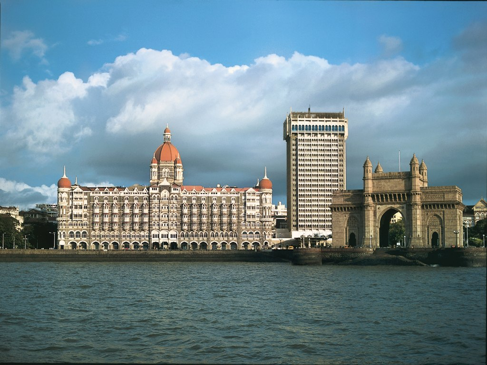
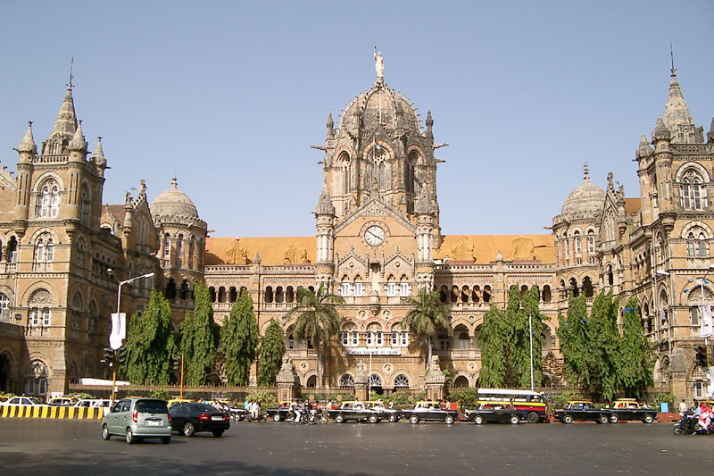
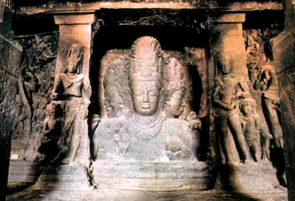
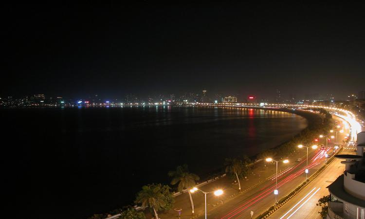
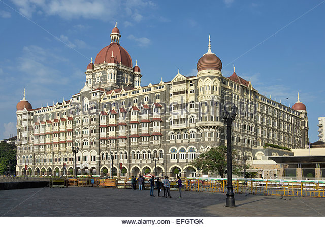
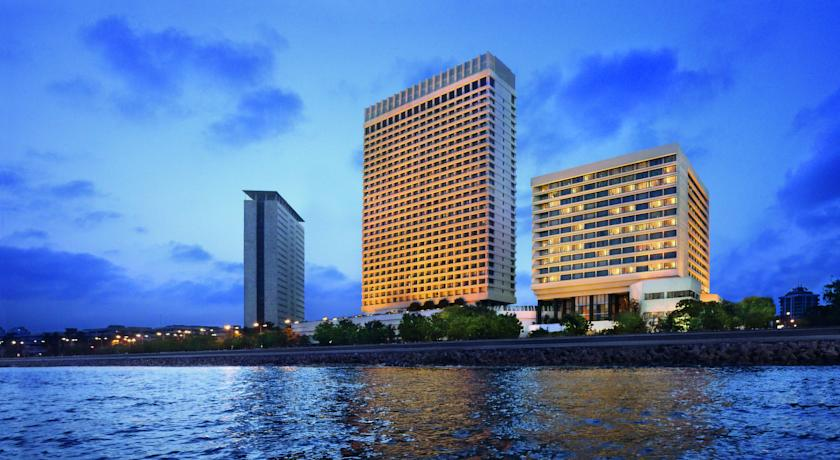
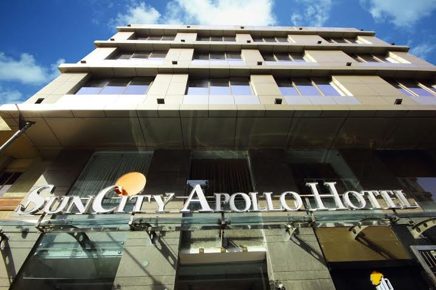

THE GATEWAY OF INDIA

The Gateway of India is one of India's most unique landmarks
situated in the city of Mumbai. The colossal structure was constructed
in 1924. Located at the tip of Apollo Bunder, the gateway overlooks the
Mumbai harbor, bordered by the Arabian Sea in the Colaba district. The
Gateway of India is a monument that marks India's chief ports and is a
major tourist attraction
for
visitors who arrive in India for the first time. At one point of time,
this monument represented the grandeur of the British Raj in India. The
total construction cost of this monument was approximately 21 lakhs and
the whole expense was borne by the Indian government. A favourite spot
for tourists, nowadays, this monument attracts vendors, food stalls and
photographers. The passing of the 'First Battalion of the Somerset
Light Infantry' was recorded as the first main event that took place at
the Gateway of India. This ceremony was conducted on February 28, 1948,
when the last set of British troops and divisions left India,
post-independence.
Read
more
History
The main objective behind the construction of the
Gateway of India was to commemorate the visit of King George V and
Queen Mary to Bombay (Mumbai). In March 1911, Sir George Sydenham
Clarke, who was then the Governor of Bombay, laid down the monument's
first foundation. Although, this plan was approved only in 1914, the
reclamations at Apollo Bunder were completed only in 1919. The
architectural design of Gateway of India was fashioned by architect,
George Wittet. It took 4 years to complete this monument's construction.
The structural design of the Gateway of India is constituted
of a large arch, with a height of 26m. The monument is built in yellow
basalt and indissoluble concrete. The structural plan of Gateway of
India is designed in the Indo-Saracenic style. One can also find traces
of Muslim architectural styles incorporated in the structure of the
grandiose edifice. The central dome of the monument is about 48 feet in
diameter, with a total height of 83 feet. Designed with intricate
latticework, the 4 turrets are the prominent features of the entire
structure of the Gateway of India. There are steps constructed behind
the arch of the Gateway that leads to the Arabian Sea. The monument is
structured in such a way that one can witness the large expanse of the
'blue blanket' right ahead, welcoming and sending off ships and
visitors.
Read
more
Nearby Tourist Attractions
Chhatrapati Shivaji Terminus

Chhatrapati Shivaji Terminus is inspired by
London's St Pancras
Station, this gothic structure is considered by many to be one of the
British government's best architectural masterpieces. Flying
buttresses, neoclassical sculptures, spires, Corinthian columns, stone
carvings and friezes decorate the elaborate train station, making this
a must-see, whether you've got a train to catch or not.
Elephanta Caves

The Elephant Caves are located very close to the
Gateway of India, and tourists can travel on motor boats to reach the
Elephant Islands. Statues of the Maratha leader Shivaji and Swami
Vivekananda are installed at the entrance of the Elephant Caves. The
Taj Mahal Hotel is India's most prestigious and luxurious hotel and is
situated close to the Gateway of India.
Nariman Point

Nariman Point is the fourth most expensive office
location in
the world. It is home to some of the biggest financial and business
establishments such as Air India, Central Bank of India, Indian
Express, State Bank of India, The Oberoi Hotel and so on. Situated on
the extreme southern gradient of Marine Drive, It is one of the posh
locations in Mumbai.
Famous Hotels Near Gateway Of India
Taj Hotel

Oberoi Hotel

SunCity Apollo Hotel

Go TO Top
Go To
Previous Page